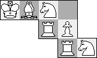
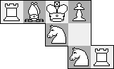
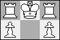
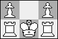
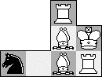
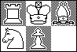
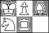

n/2
n/2 2.
2.Problem #1: Chess Placement Puzzles. The problem of arranging 8 queens on a standard chessboard so that no queen attacks another is a famous problem. There are 92 solutions (12 if rotations and reflections are considered the same), and one of them is shown below.
The maximum number of non-attacking rooks on a chessboard is also 8, and there are 8! = 40320 solutions (5282 up to rotation and reflection). The maximum number of non-attacking knights on a chessboard is 32, with the obvious 2 solutions (1 up to rotation and reflection). What is the maximum number of non-attacking Bishops on a chessboard? How many solutions are there? What about Kings? What about Pawns? How do all these answers change when we change the size of the chessboard?
Problem #2: Sliding Chess Puzzles. These are puzzles with white chess pieces arranged on a chessboard of some shape, and the puzzle is to get the pieces to some other configuration, using only legal chess moves. For example, a modification of T. R. Dawson's classic "revolver" puzzle is shown below. To get from the left position to the right position takes 39 moves. Can you find a solution?
|  | → |  |
Does anyone know of any other existing sliding chess puzzles? For a given sized chessboard, what is the puzzle with the longest solution? For example, to get from the left position to the right position below takes 12 moves. Is there a 2x3 puzzle with a longer solution? What about other sized chessboards?
|  | → |  |
Ulrich Schimke says the queen placement problem has been well studied. He noted that sequences A000170 and A002562 of the Encyclopedia of Integer Sequences concern this problem. Let F(n) be the number of queen placements on an n×n board. He also gives a heuristic argument for why F(n+1) ≈ n F(n) / e, which would mean F(n) ≈ n! / en. The idea is to add a new row and column, and note that a new queen can be placed there with probability 1/e.
Joseph DeVincentis, Trevor Green, Claudio Baiocchi, and Ulrich Schimke showed that the maximum number of bishops on an n×n chessboard is 2n–2, by considering the 2n–1 diagonals running in one direction, and noticing that the shortest diagonals cannot both be occupied. They calculated the number of ways to do this is 2n by noticing that each pair of bishops could be either on the top/bottom or left/right sides of the chessboard.
Joseph DeVincentis, Trevor Green, and Ulrich Schimke showed that the maximum
number of kings on an n×n chessboard is n/22.
The number of ways to do this is obviously 1 if n is odd. If n is even, this is a much harder question. Joseph DeVincentis gives a lower bound of 54=625 based on the fact that each row of 4 kings could have 5 different columns arrangements. Doing the same sort of argument for rows at the same time, he gets an upper bound of 58=390,625.
Trevor Green bounded the number of arrangements of kings below by (2n+2)n and above by 4n2. He improved the lower bound for an 8 x 8 chessboard to 265,625 by considering the 9 places where four 2×2 boards meet, and subtracting off ways that kings could threaten each other. He gives the number of placements on even boards as: 4, 79, 3600, . . . .
On a 2×2n board, Trevor Green says there are (n+1) 2n placements. By considering several strips of a 2×2n board, he can get an upper bound of [(n+1) 2n]n.
Olexandr Ravsky reminds me that Herb Wilf wrote a paper on the king placement problem in which he finds asymptotics for the number of different placements.
Sasha Ravsky tells me that the maximum number of kings on an 8x8 chessboard is 281,571, according to page 119 of "The chess composition dictionary" by N. P. Zelepukin, Kyiv: Zdorov'ya, 1985, (in Russian). Then David Wilson wrote to tell me that this sequence has been in the Encyclopedia of Integer Sequences for some time.
Trevor Green showed that the maximum number number of pawns is n2/2 when n is even, and claimed that the maximum is n(n+1)/2 when n is odd. (I think he assuming that pawns can be placed on the first and last ranks.) His proof that n2/2 is optimal when n is even is to note that there is such an arrangement (pawns in every other column), and that any 2x2 square can contain at most two pawns.
Trevor Green says the number of ways to place non-attacking pawns on an n×m chessboard is 2 when mn is odd, and he conjectures that the answer is [(m+n)!/m!n!]2 when mn is even. He has confirmed that the number of placements on even n×n boards starts: 4, 36, 400, . . .
In 2016, Dave Barlow pointed out that more pawns could be placed if we used pawns of both colors. His solutions involved alternating rows of white, black, and no pawns.
Joseph DeVincentis and Ulrich Schimke found the solution to the revolver problem.
Joseph DeVincentis recalled another famous sliding chess puzzle: to start from the position below and switch the knights. Consecutive moves by the same piecce are counted as one move. There are 7 move solutions which are all essentially the same.
Ulrich Schimke recalled yet another sliding chess puzzle, this one by E. Gik. Start with the position below and switch the king and queen. He says the solution is 41 moves. Sasha Ravsky says the problem is due to V. Shinkman and takes 107 moves.
Sasha Ravsky also passed on these two chess puzzles. In both cases, the king is supposed to take the black knight never being in check. They both require 27 moves. The latter was thought to require 28 moves until Joe Hook found a shorter solution.
 |  |
Steven Taschuk sent me a 2×3 sliding chess puzzle that requires 18 moves:
|  | → |  |